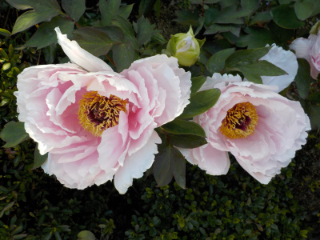
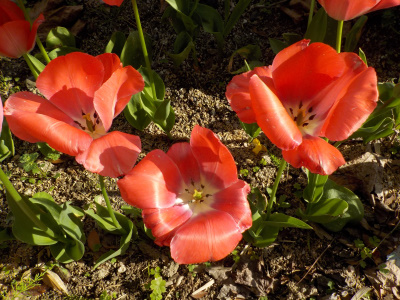

遊びで植物を育てよう
2020/04/25
ボタンが咲きました。

ボタンが咲くとゴールデンウィークが来るなーって思うんですが、今年は新型コロナで外出しづらいですね。
園芸作業ははかどりそうです。
【4月TOP】
【日記TOP】
【園芸TOP】
2020/04/05
チューリップの時期がもう終わった。

桜が終わったらチューリップなイメージだったんですが、桜が咲いているうちにチューリップが終わりました。
温暖化ですね。
【4月TOP】
【日記TOP】
【園芸TOP】
2020/04/05
赤いフリージアが咲きました。
赤は黄色や青よりも成長が遅いみたいで、1週間くらい遅い開花でした。
【4月TOP】
【日記TOP】
【園芸TOP】
過去の日記
【2024年4月の日記】
【2023年4月の日記】
【2022年4月の日記】
【2021年4月の日記】
【2020年4月の日記】
【2019年4月の日記】
【2018年4月の日記】
【2017年4月の日記】
【2016年4月の日記】
【2015年4月の日記】
【2014年4月の日記】
【2013年4月の日記】
【4月TOP】
【日記TOP】
【園芸TOP】
畑仕事じゃないよ。
【おいしいものを食べよう。】【しっかり寝よう。】
【ソロ活をしよう!】【季節感のあることをしよう。】【動画視聴はほどほどに。】【当サイトの全てのコンテンツは無断転載禁止です。】